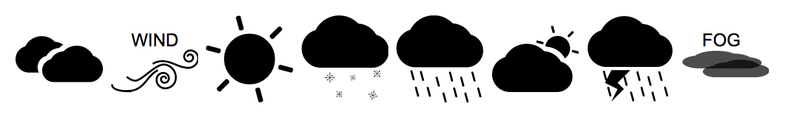
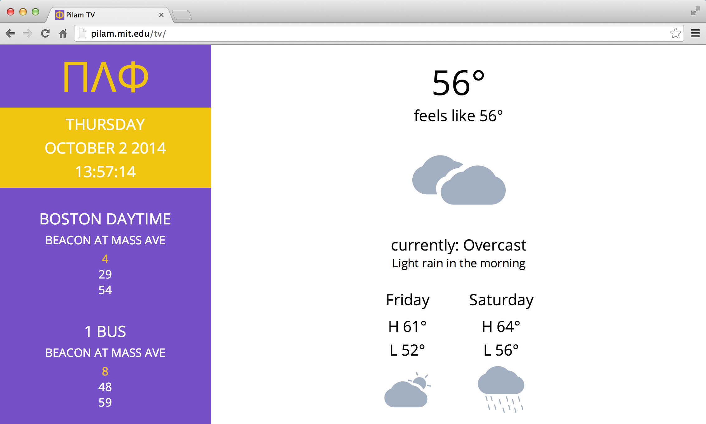
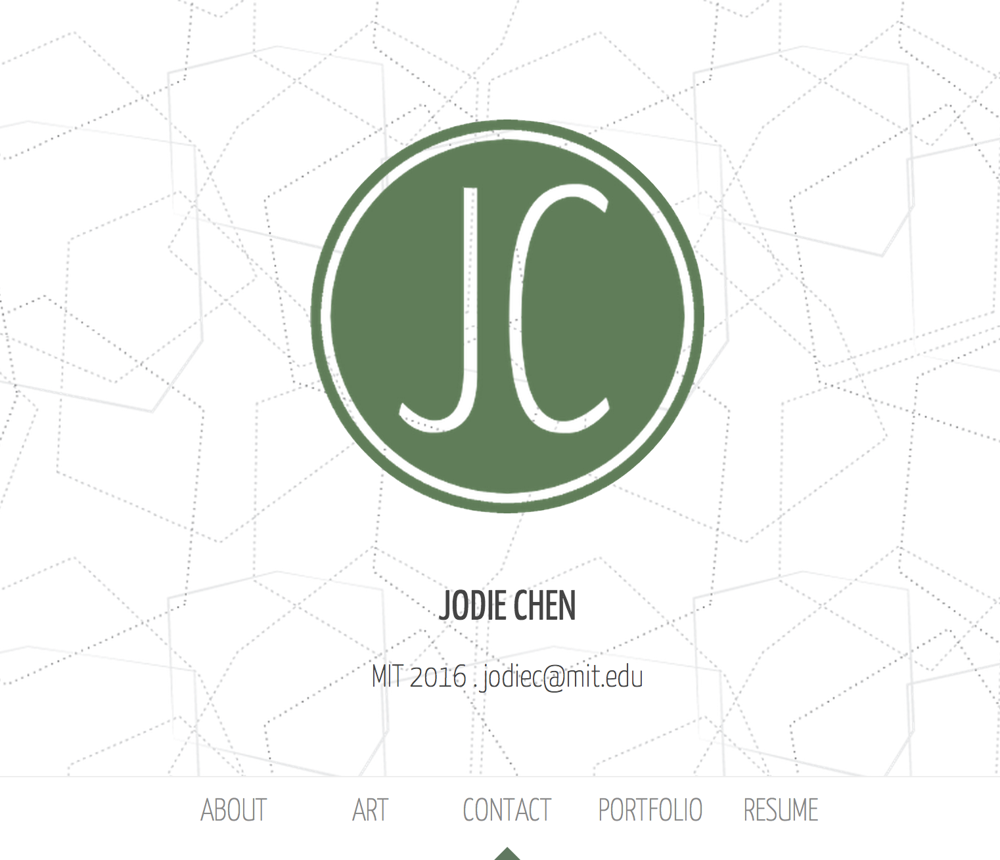

Javascript, HTML, CSS, Django
This was a group project created for the class UI/UX Design and Implementation in the Spring 2014. During this period, we created a website using the spiral design/iterative design project. My most important task was designing the website itself. We decided to create a crowdsourced web application to match prospective home buyers to a neighborhood that fits their preferences. Since this was for a UI/UX class, we focused mainly on the interactions a home buyer would perform and the backend is not fully implemented.
After we interviewed several people interested in buying homes around Boston soon, we determined what they wanted to know about the different neighborhoods. We decided we wanted to have people take a survey first to get to know what they want in their neighborhood.
We also wanted people to explore and discover popular neighborhoods in the city they wanted to move to. Thus we created an interactive map that shows the ratings for the surrounding neighborhoods in several categories.
Backbone.js, HTML, CSS, Javascript, PADherder API, Wunderground API
I am obsessed with this game called Puzzle and Dragons (PAD); it's currently the top grossing mobile game in Japan, so you should check it out. It's a puzzle based adventure with dungeons you have to beat and powerful monsters from a rare gacha. I liken it a lot to my favorite childhood game, Pokemon due to the collection aspect. I convinced many of my friends to play, wrote an essay on it, so it's no surprise that I also made an Chrome extension to increase my efficiency in consuming related material.
I often find myself having to use go through multiple steps in order to look up information such as the alternating dungeon schedules and to read analyzations about a possible new meta. It would be so much easier if Momentum, a new tab extension, incorporated PAD into it. And that's just what I did, I recreated Momentum with a PAD flair to it.
I really liked how Momentum had a todo list, time, and the weather, which for some reason really helped improve my productivity, so I decided to keep those in there. The middle search bar also performs searches on PuzzleDragonX.com! The bottom left hand corner notifies the user about the special events of the day.
It's definitely still a work in progress, and I'm slowly but surely figuring out how Backbone works. The background is just a placeholder right now and the weather only works when the extension is installed (due to my security settings). Unfortunately, the PADherder API stopped working and it no longer shows the dungeon schedules depending on the group you're in, so I'm currently figuring out a workaround for that. :(

pilam tv
Illustrator, Photoshop
I do a lot of random design work for friends, and one of the projects I contributed to that I find particularly useful is this all in one web page that aggregates the world news, dinner menu, weather, and up to date bus information. I often find myself using it on my phone to check the weather or the bus times because it loads much faster and provides much more helpful information than MIT's mobile application.
My friend asked for help in creating some vector icons for his application...
...and I got to play around with SVGs!
Here's what they look like in the application

HTML, CSS, Javascript (and many libraries)
Sophomore year IAP: New York was cold, I was bored, and for some reason, I decided to embark on the journey of actually designing/creating my own website to showcase some of my art. I spent a lot of time playing around with creating websites, but I never finished a project. Mainly, I just wanted to figure out how all the cool single page websites that had parallax scrolling and fixed headers worked.
In the end, I barely used any parallax scrolling; it made my website look a little too busy. I spent most of my time playing around with javascript libraries and figuring out what I could do. I pulled many almost all-nighters debugging my Javascript, changing the layout of the website, and designing the graphics. Fluid layouts are hard.
Looking back at it now, I'm kind embarrassed by my hacky code and design. I didn't really have a plan beforehand for how I wanted it look like, so I kind of just threw it all together. But I'm still pretty proud, this was my first big personal project, and I learned so much more than I would have expected. I didn't have any experience with Javascript prior to that point, and it took copious amounts of googling and trips to Stack Overflow to figure out how to do things and why my code wasn't working. After this project, I definitely advanced from Javascript newbie to a Javascript amateur. Having a finished product just makes it all the more satisfying.